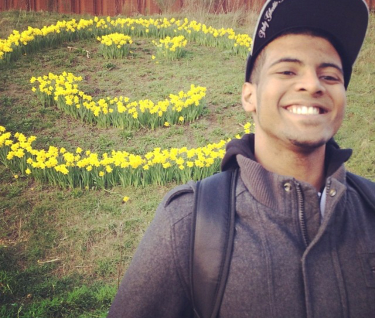
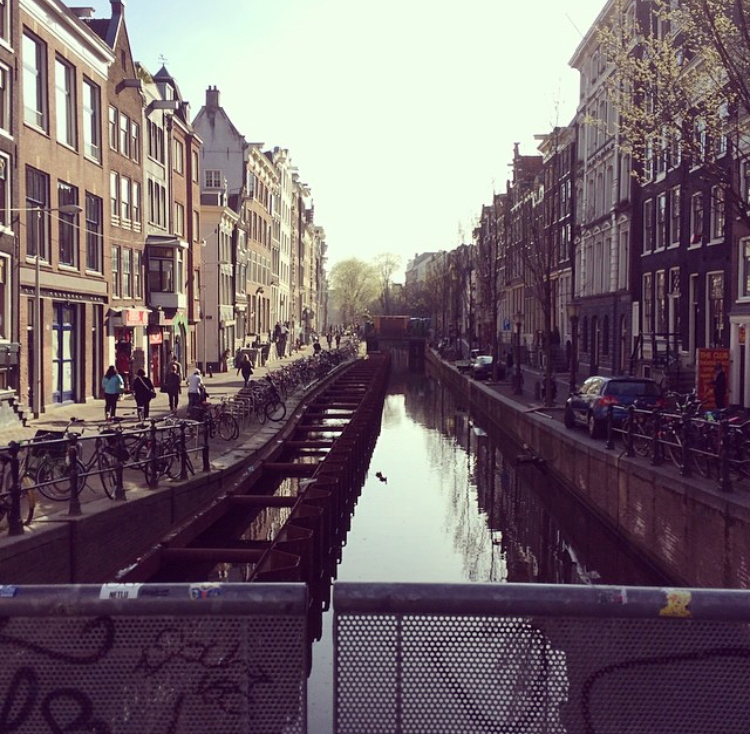
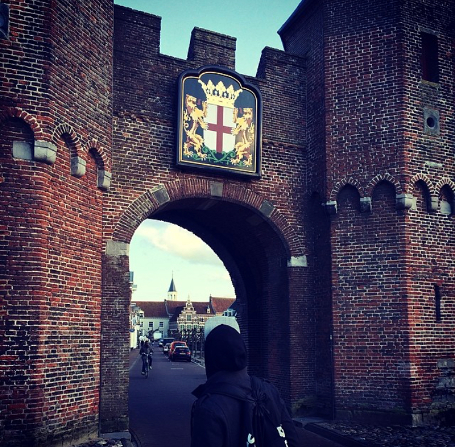
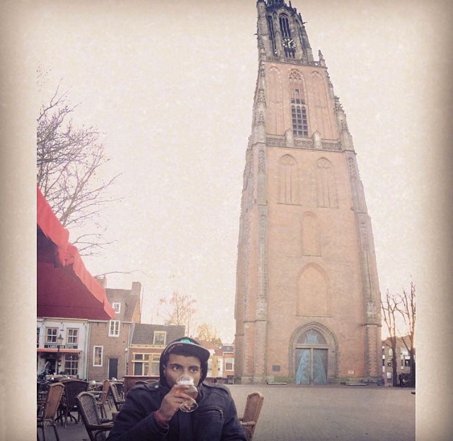
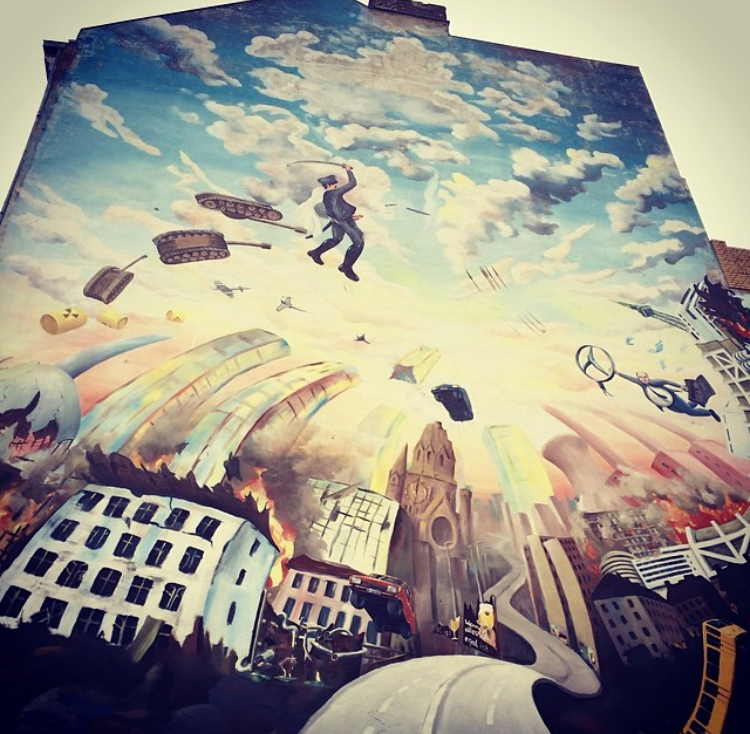

The idea of crippling debt < broadening my horizons, so after some thought, I decided to see what's beyond the coasts of America!
First stop, Holland!
My family lineage is quite spread. I was born in New York with family in The Netherlands, Suriname, Guyana, and India.
Where the heck is Suriname? Where the heck is Guyana?I decided on traveling to The Netherlands because the whole "backpacking through Europe" concept fascinated me. I had to try it! I worked my butt off to save money, then flew in to meet my family in Velp, Netherlands. First thing I was greeted by was this rad flower bed.
The country is filled with little flower architecture like this! It's a beautiful country with an almost perfectly seamless mix of gothic architecture and either flowery natural settings, or with the building structures built symmetrically around the canals. It's truly a society where they've figured out how to balance man vs nature in both architecture, and culture.
  Immediatley, I fell in love with the architecture, culture, and overall style of the country! They're incredibly health concious, primarily riding bikes as their form of transportation. They also utilize a very impressively smooth public transit system to get anywhere in OR out of the country. So seamless in fact, on a whim, I decided to take a train ride to Berlin. They have some of the most amazing street art I've ever seen; and that's coming from someone from New York!
All in all, my trip to Europe were some of the coolest times of my life, and half of the reason I'm in LC101 in the first place! I've only detailed the very first leg of my world trip, which spanned about 4 months, in this website. But I do believe this is more than enough to fit the requirements. Thanks for reading!